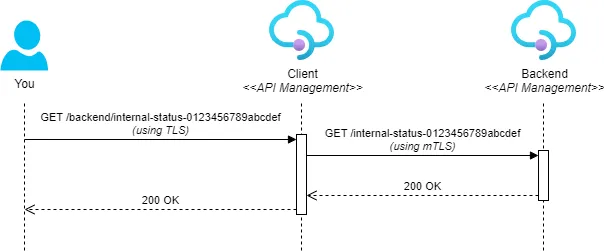
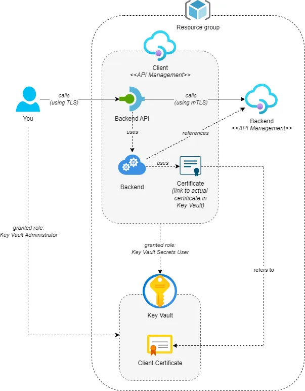
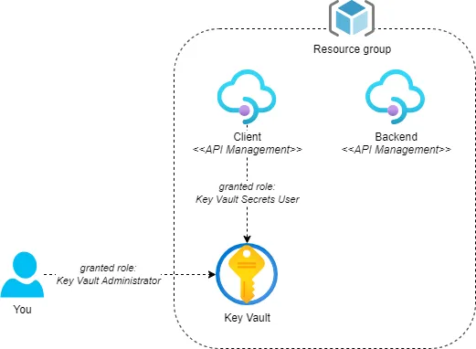
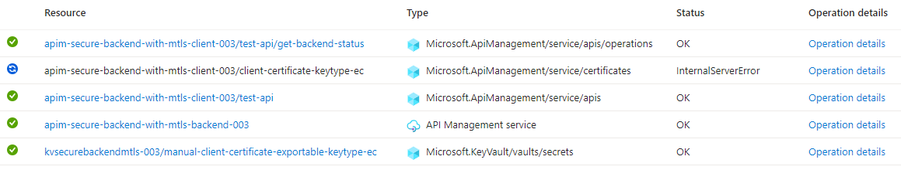

Securing backend connections with mTLS in API Management

This is the third post in a series on working with client certificates in Azure API Management. Throughout the series, I’ll cover both the validation of client certificates in API Management and how to connect to backends with mTLS (mutual TLS) using client certificates.
While Azure’s official documentation provides excellent guidance on setting up client certificates via the Azure Portal, this series takes it a step further. We’ll dive into utilizing Bicep and other essential tools, like the Azure CLI, to automate the entire deployment process.
Topics covered in this series:
- Validate client certificates in API Management
- Validate client certificates in API Management when its behind an Application Gateway
- Securing backend connections with mTLS in API Management (current)
Table of Contents
- Intro
- Prerequisites
- Add API and backend configuration
- Call backend using mTLS
- Considerations
- Conclusion
Intro
In the previous posts, we covered how to validate client certificates in Azure API Management. In this post, we’ll focus on securing backend connections with mTLS in API Management.
We’ll deploy two API Management instances: the first will serve as the backend and require a client certificate for authentication, and the second will act as the client. We will call the client using TLS, and it will, in turn, connect to the backend using mTLS. See the sequence diagram below:

To make this work, we’ll need to create several resources. The following diagram provides an overview of the setup we’ll create:

This post provides a step-by-step guide. If you’re interested in the end result, you can find it here. If you want to know how to configure this through the Azure Portal, have a look at Secure backend services using client certificate authentication in Azure API Management.
Prerequisites
The first section will cover the prerequisites for this post. You’ll need:
- A backend that requires mTLS for authentication. We’ll use a Consumption tier API Management instance. The
enableClientCertificateproperty needs to be set totruefor mTLS to be enabled. - Another Consumption tier API Management instance that will act as the client and connect to the backend using a client certificate.
- A Key Vault to store the client certificate. The API Management client instance needs access to the Key Vault using the ‘Key Vault Secrets’ role.
- Access to the Key Vault yourself to create a certificate in the Key Vault. The ‘Key Vault Administrator’ role will suffice.
The following diagram provides an overview of the prerequisites:

You can create these resources manually, but I’ve created a Bicep template that will deploy all the prerequisites. You can find the Bicep template here.
You can use the accompanying deploy-prerequisites.ps1 PowerShell script to deploy the prerequisites. It uses the Azure CLI to:
- Create the resource group if it doesn’t exist.
- Get your user id to grant you access to Key Vault.
It uses theaz ad signed-in-user showcommand to retrieve your id. If this fails, you can use theKeyVaultAdministratorIdparameter to specify your id manually. - Deploy the Bicep template.
Here’s an example of how to run the script. Make sure to replace <your-resource-group>, <your-apim-client-instance>, <your-apim-backend-instance>, and <your-key-vault> with your own values.
./deploy-prerequisites.ps1 `
-ResourceGroupName "<your-resource-group>" `
-ApiManagementServiceClientName "<your-apim-client-instance>" `
-ApiManagementServiceBackendName "<your-apim-backend-instance>" `
-KeyVaultName "<your-key-vault>"
The deployment will take a few minutes. After the deployment is finished, you can test the API Management instances by calling the health endpoint. Open the following URL in your browser to test the client API Management instance. It should return a 200 OK response. Replace <your-apim-client-instance> with your own value:
https://<your-apim-client-instance>.azure-api.net/internal-status-0123456789abcdef
For the backend API Management instance, use the following URL. Replace <your-apim-backend-instance> with your own value:
https://<your-apim-backend-instance>.azure-api.net/internal-status-0123456789abcdef
Calling the backend API Management instance should either return a 403 Forbidden response immediately or request a client certificate. This is because the backend requires mTLS.
Take note that while the default health endpoint for a Consumption tier API Management instance is
/internal-status-0123456789abcdef, it is/status-0123456789abcdeffor other tiers. Also, if you’re not using the Consumption tier, the default health endpoint will not require mTLS. Instead, you’ll need to create your own API in the backend API Management instance that requires mTLS. See the post Validate client certificates in API Management in this series for more information.
Add API and backend configuration
Next, we’ll call the backend from the client. For this, we’ll need two things. First, we’ll create a backend resource in the client API Management instance that will contain the backend configuration, such as the base URL. Then, we’ll add an API to the client API Management instance that will forward requests to the backend. We’ll apply a test-driven approach and initially connect to the backend using TLS. This should fail.
Start by creating a main.bicep file and add the following code:
@description('The name of the API Management Service that will be the client side of the connection')
param apiManagementServiceClientName string
@description('The name of the API Management Service that will be the backend side of the connection')
param apiManagementServiceBackendName string
resource apiManagementServiceClient 'Microsoft.ApiManagement/service@2022-08-01' existing = {
name: apiManagementServiceClientName
}
resource apiManagementServiceBackend 'Microsoft.ApiManagement/service@2022-08-01' existing = {
name: apiManagementServiceBackendName
}
We’re creating a reference to the existing client API Management instance so that we can deploy the backend and API to it. The backend API Management instance will be used to obtain the URL to the backend.
Next, add the following code to the main.bicep file to create the backend:
resource testBackend 'Microsoft.ApiManagement/service/backends@2022-08-01' = {
name: 'test-backend'
parent: apiManagementServiceClient
properties: {
url: apiManagementServiceBackend.properties.gatewayUrl
protocol: 'http'
tls: {
validateCertificateChain: true
validateCertificateName: true
}
}
}
As you can see, we’re creating a backend called test-backend. The URL is set to the gateway URL of the backend using apiManagementServiceBackend.properties.gatewayUrl. Both the validateCertificateChain and validateCertificateName TLS properties are set to true so that the client will validate the SSL server certificate of the backend. These are set to false by default.
The last step is to add the ‘Backend API’ to the client API Management instance. Add the following code to the main.bicep file:
resource backendApi 'Microsoft.ApiManagement/service/apis@2022-08-01' = {
name: 'backend-api'
parent: apiManagementServiceClient
properties: {
displayName: 'Backend API'
path: 'backend'
protocols: [
'https'
]
subscriptionRequired: false // Disable required subscription key for simplicity of the demo
}
// Set an API level policy so all operations use the backend
resource policies 'policies' = {
name: 'policy'
properties: {
value: '''
<policies>
<inbound>
<base />
<set-backend-service backend-id="test-backend" />
</inbound>
<backend><base /></backend>
<outbound><base /></outbound>
<on-error><base /></on-error>
</policies>
'''
}
}
// Create a GET Backend Status operation
resource operations 'operations' = {
name: 'get-backend-status'
properties: {
displayName: 'GET Backend Status'
method: 'GET'
urlTemplate: '/internal-status-0123456789abcdef'
}
}
dependsOn: [
testBackend
]
}
This Bicep code creates an API called backend-api. I’ve disabled the required subscription key to facilitate testing, but this should not be done in real-world scenarios if you don’t have another authentication mechanism in place.
The API has a policy that sets the backend to the test-backend backend we created earlier. This ensures that any request sent to the API is forwarded to the backend.
We also create one operation on the API called GET Backend Status that will be used to test the connection to the backend. It will call the default health endpoint on the backend API Management instance, because the operation’s URL template is internal-status-0123456789abcdef.
Because we’re using the test-backend backend in the policy, we also need to add a dependency on the testBackend resource.
Save the main.bicep file and run the following command in a PowerShell prompt to deploy the resources. Make sure to replace <your-resource-group>, <your-apim-client-instance>, and <your-apim-backend-instance> with your own values.
az deployment group create `
--name "deploy-main-$(Get-Date -Format "yyyyMMdd-HHmmss")" `
--resource-group '<your-resource-group>' `
--template-file './main.bicep' `
--parameters apiManagementServiceClientName='<your-apim-client-instance>' `
apiManagementServiceBackendName='<your-apim-client-instance>' `
--verbose
After the deployment is finished, you can test the connection to the backend by calling the GET Backend Status operation on the backend-api API of the client. Simply navigate to the following URL in your browser, replacing <your-apim-client-instance> with your own value:
https://<your-apim-client-instance>.azure-api.net/backend/internal-status-0123456789abcdef
The result should be a 403 Forbidden response because the backend requires a client certificate for authentication, while the client uses TLS to connect to the backend. We’ll add the client certificate in the next section.
Call backend using mTLS
In this section, we’ll create a client certificate in the Key Vault and create a link to the certificate in the client API Management instance. Then, we’ll update the backend configuration in the client to use the client certificate for authentication.
Let’s start with the client certificate. We can use the az keyvault certificate create command to generate a self-signed certificate in the Key Vault. This command requires a policy that specifies how to create the certificate. We can obtain the default policy using the az keyvault certificate get-default-policy command.
You can use the following PowerShell script to create the certificate. Make sure to replace <your-key-vault> with your own value.
az keyvault certificate get-default-policy | Out-File -Encoding utf8 defaultpolicy.json
az keyvault certificate create --vault-name "<your-key-vault>" `
--name "generated-client-certificate" `
--policy `@defaultpolicy.json
This will create a certificate named generated-client-certificate, which will be valid for 1 year. The private key is exportable, a requirement when using the certificate in API Management. Additionally, the key type is RSA, which is important. We’ll revisit this later in the considerations section.
With the client certificate now stored in the Key Vault, we can use it in API Management. Open your main.bicep file and add the following code:
@description('The name of the Key Vault that will contain the client certificate')
@maxLength(24)
param keyVaultName string
@description('The name of the secret in the Key Vault that contains the client certificate')
param clientCertificateSecretName string = 'generated-client-certificate'
resource keyVault 'Microsoft.KeyVault/vaults@2023-02-01' existing = {
name: keyVaultName
}
resource clientCertificateSecret 'Microsoft.KeyVault/vaults/secrets@2023-07-01' existing = {
name: clientCertificateSecretName
parent: keyVault
}
This creates a symbol to the client certificate in the Key Vault using the Microsoft.KeyVault/vaults/secrets resource. Since the Microsoft.KeyVault/vaults/certificates resource type does not exist, using a secret is the only way to reference the certificate in the Key Vault. Although we’ve created the client certificate as a certificate, the Key Vault will also create a secret with the same name that can be used to reference the certificate.
The name of the client certificate in the Key Vault can be specified through the
clientCertificateSecretNameparameter. This is useful if you want to try out different types of certificates.
Next, add the following code to the main.bicep file to link the certificate from the client API Management instance:
resource clientCertificate 'Microsoft.ApiManagement/service/certificates@2022-08-01' = {
name: 'client-certificate'
parent: apiManagementServiceClient
properties: {
keyVault: {
secretIdentifier: clientCertificateSecret.properties.secretUri
}
}
}
This code creates a ‘certificate’ resource that references the client certificate. The secretIdentifier property is set to the secretUri of the client certificate secret in the Key Vault.
The last step is to update the backend to use the client certificate for authentication. Replace the current testBackend resource with the following code:
resource testBackend 'Microsoft.ApiManagement/service/backends@2022-08-01' = {
name: 'test-backend'
parent: apiManagementServiceClient
properties: {
url: apiManagementServiceBackend.properties.gatewayUrl
protocol: 'http'
credentials: {
certificateIds: [
clientCertificate.id
]
}
tls: {
validateCertificateChain: true
validateCertificateName: true
}
}
}
This new version includes a credentials property that contains a certificateIds property. This property is an array containing the ID of the ‘certificate’ resource we created earlier. This ensures that the client certificate is used for authentication when connecting to the backend.
Save the main.bicep file and run the following command in a PowerShell prompt to deploy the resources. Make sure to replace <your-resource-group>, <your-apim-client-instance>, <your-apim-backend-instance>, and <your-key-vault> with your own values.
az deployment group create `
--name "deploy-main-$(Get-Date -Format "yyyyMMdd-HHmmss")" `
--resource-group '<your-resource-group>' `
--template-file './main.bicep' `
--parameters apiManagementServiceClientName='<your-apim-client-instance>' `
apiManagementServiceBackendName='<your-apim-client-instance>' `
keyVaultName='<your-key-vault>' `
clientCertificateSecretName='generated-client-certificate' `
--verbose
After deploying the changes, you can retest the connection to the backend by calling the GET Backend Status operation on the backend-api API again. Navigate to the following URL in your browser, replacing <your-apim-client-instance> with your own value:
https://<your-apim-client-instance>.azure-api.net/backend/internal-status-0123456789abcdef
Instead of receiving a 403 Forbidden response, you should now receive a 200 OK response, indicating that the backend is called using a valid client certificate.
Note that currently, any client certificate will be accepted by the backend. This is because we’re not validating the client certificate in the backend API Management instance. Instructions on how to do this are covered in the first and second posts of this series. You can find them here and here.
You can find the end result here.
Considerations
There are some considerations to keep in mind when working with client certificates stored in Key Vault and used by API Management.
First, when creating or importing certificates in Key Vault, it’s preferred to not make the private key exportable. This is safer because it’s not possible to export the private key and steal the certificate. However, when using the certificate in API Management, the private key must be exportable. If you don’t make it exportable and deploy the Bicep template, you’ll receive the following error:
Certificate with id 'client-certificate' does not contain private key.
Secondly, at the time of writing this post, API Management has a bug concerning certificates with key type EC. When deploying the Bicep template and referencing a certificate with this key type, the first deployment will succeed when the ‘certificate’ resource is created in API Management. However, once the ‘certificate’ resource exists in API Management, consecutive deployments will all fail with a 500 Internal Server Error response.
To test this, create a certificate in the Key Vault with key type EC. Then redeploy the Bicep template, passing the name of the new client certificate into the clientCertificateSecretName parameter. Assuming that the ‘certificate’ resource already existed in API Management, the deployment will take a lot longer than before. If you look at the deployment in the Azure Portal, you’ll see a running deployment with status ‘InternalServerError’. See the figure below.

I let the deployment run, and it failed after running for over 2 hours due to a timeout. I’ve contacted Microsoft about this issue, and they’ve informed me that it’s a known issue and that they’re working on a fix. Unfortunately, they can’t provide a timeline for when this will be resolved.
If you also encounter this issue, please upvote Support updating certificates generated in Key Vault (Bug) on the Azure Feedback Forum. Hopefully, this will speed up the process of getting it fixed.
As a workaround, we’ve added a boolean parameter to our deployment, which we can manually set to true when the ‘certificate’ resource is created for the first time. After the initial deployment, we set it to false, so the ‘certificate’ resource is not updated, and the deployment succeeds. While not ideal, this workaround will suffice until the issue is resolved.
Conclusion
In comparison to validating a client certificate in API Management, as we did in previous posts, using a client certificate to connect to a backend is fairly easy to set up. You only need to create a client certificate in the Key Vault and reference it in the backend configuration of API Management.